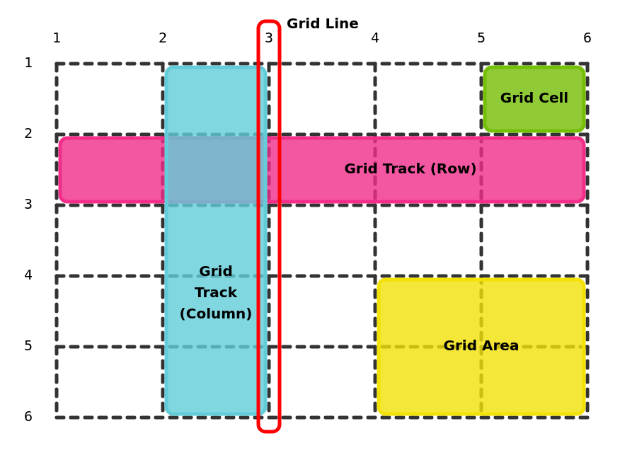
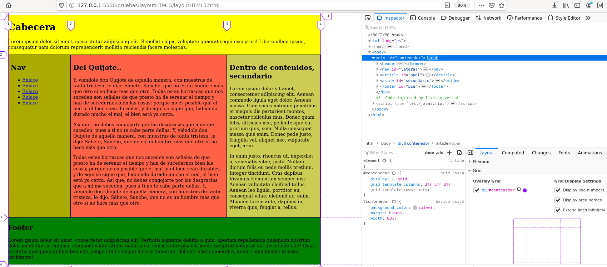

Layout HTML con CSS grid¶
1. Código ejemplos layout¶
Los ejemplos están disponibles en el directorio t12_01_layout. Para probarlos basta modificar el fichero CSS enlazado en el fichero layout.html:
- Usando grid:
grid.css - Usando grid con nombres de áreas:
grid_areas.css
En la carpeta otros tiene otras posibilidades que no son parte de los contenidos evaluables:
- Usando flex:
flex.css(no tanto para layout sino para el flujo en una única línea) - Usando float:
float.css=> obsoleto pero se encuentra todavía en uso. - Usando display: table-cell: fichero
table-cell.css=> obsoleto - Usando display: inline-blocks fichero
inline-blocks.css=> obsoleto
Por lo tanto en este tema nos vamos a centrar en el uso de grid y grid areas.
2. Layout con grid¶
Al aplicarle la propiedad display:grid a un elemento HTML lo convertimos en un grid o rejilla. Por defecto esa rejilla tiene una única columna, y cada elemento hijo de la rejilla se dispone en una celda (en el orden que aparecen en el fichero HTML).
Con la propiedad grid-template-columns: se define el número y tamaño de las columnas de la rejilla.
Modificación 2025: se añaden carpetas con ejemplos muy básicos del uso de grid.
- Carpeta 01: ejemplo del uso de
grid,grid-template-columnsygap - Carpeta 02: ejemplo del uso de
grid-template-areasygrid-area - Carpeta 03: ejemplo en el que se muestra que en algunas situaciones es más sencillo usar
grid-columnsquegrid-area
Se recomienda analizarlos antes de seguir.
3. Layout con posicionamiento filas y columnas¶
Las líneas que delimitan la rejilla se numeran a partir de 1. Si hemos definido 3 columnas, las líneas irían de la 1 a la 4. Esos números de líneas se usan en las propiedades grid-column y grid-row para indicar:
- donde comienza / donde termina una celda (p.e.
grid-column: 1 / 4;indica que comienza en la línea 1 y termina en la 4) - o dónde comienza y a cuantas cuadriculas se expande una celda (p.e
grid-column: 1 / span 3;significa que comienza en la línea 1 y ocupa el espacio de tres celdas)
En la siguiente figura puede observar una rejilla y marcadas las líneas, celdas, filas y columnas.

En el código de ejemplo tiene una explicación de:
- dónde definir el grid (
display: grid) - cómo definir el número de columnas (
grid-template-columns) con porcentajes o con la unidadfr. - Y como situar cada bloque en el grid (propiedades
grid-columnygrid-row), ya sea dejando su posición por defecto, posicionando con los número de líneas o usandospanpara ocupar más de una celda.
Veamos un ejemplo en el fichero grid.css para definir una rejilla de tres columnas. La propiedad display:grid; se aplica en el elemento padre de los elementos que queremos disponer en rejilla, que en el caso del ejemplo es un bloque <div> con id="contenedor":
/* rejilla 3 columnas: líneas de columna de la 1 a la 4 */
#contenedor {
display: grid;
grid-template-columns: 20% 50% 30%; /* tres columnas y reparto tamaños columnas */
}
Y observe el posicionamiento de los elementos HTML hijos de ese #contenedor:
- Se ha movido el
footera la primera fila congrid-row: 1; - Se ha modificado el tamaño de
footeryheaderpara que ocupen tres celdas congrid-column: 1 / span 3ogrid-column: 1 / 4; - Al resto de elementos hijos no se les ha aplicado ninguna propiedad por lo que ocupan una única celda siguiendo el orden en el que aparecen en el contenedor.
footer {
grid-row: 1; /* modifica la fila dónde se posiciona footer */
grid-column: 1 / span 3; /* equivale a 1 / 4 */
}
header {
grid-column: 1 / 4;
/* equivale a
grid-column-start: 1;
grid-column-end: 4; */
}
Es posible usar en la plantilla de columnas (grid-template-columns) la unidad fr (fraction), que simboliza una fracción de espacio total del grid.
#contenedor {
display: grid;
grid-template-columns: 2fr 5fr 3fr; /* tres columnas y reparto tamaños columnas */
}
Puede activar la visualización del grid en el inspector de elementos del navegador, pestaña layout, y ver las celdas, número de líneas, etc. Se puede apreciar en la siguiente figura:

3.1. Grid areas¶
Se facilita un fichero de ejemplo (grid_areas.css) con el uso de la propiedad grid-template-areas. Esta propiedad permite definir una plantilla de la rejilla con nombres simbólicos. Además hay que asociar esos nombres de áreas a elementos HTML con la propiedad grid-area .
#contenedor {
display: grid;
grid-template-columns: 2fr 5fr 3fr;
grid-template-areas: /* definimos la plantilla de áreas */
"cabecera cabecera barra"
"ads articulo barra"
"ads footer footer";
}
/* se asocian áreas de la plantilla a elementos HTML */
header {
grid-area: cabecera;
}
footer {
grid-area: footer;
}
...
Los nombres de área los define el desarrollador y deben ser significativos (en ocasiones se usa como nombre de área el nombre del elemento HTML).
Con grid areas mover los elementos de posición o hacer que ocupen más de una celda es simplemente hacer cambios en la plantilla de grid-template-areas (y en grid-template-columns si cambia el número de columnas). No es necesario trabajar con los números de fila y columna. Esta forma es menos sensible a errores, y mucho más legible. Observe en el siguiente ejemplo como se modifica el layout simplemente modificando el template:
#contenedor {
display: grid;
grid-template-columns: 2fr 5fr 3fr;
grid-template-areas: /* definimos BUEVA plantilla de áreas */
"barra cabecera cabecera "
"barra articulo articulo"
"footer footer ads";
}
3.2. Grid anidados¶
A veces es interesante tener un grid dentro de una de las celdas del grid. Tiene ejemplos de esta situación en el código de la carpeta grid_anidados:
- Ejemplo 01: el elemento nav es una celda del grid principal. La lista de enlaces de ese nav se ha definido como grid para disponer sus elementos en horizontal.
- Ejemplo 02: el elemento footer es una celda del grid principal. Al mismo tiempo se ha definido el footer como grid para disponer las secciones que hay dentro en columnas.
4. Enlaces de ampliación¶
- CSS Grid:
- https://lenguajecss.com/p/css/propiedades/grid-css
- https://css-tricks.com/snippets/css/complete-guide-grid/
- https://gridbyexample.com/
-
https://developer.mozilla.org/en-US/docs/Web/CSS/CSS_Grid_Layout/Basic_Concepts_of_Grid_Layout
-
Flex (o flexbox):
- https://www.w3schools.com/css/css3_flexbox.asp
- https://css-tricks.com/snippets/css/a-guide-to-flexbox/